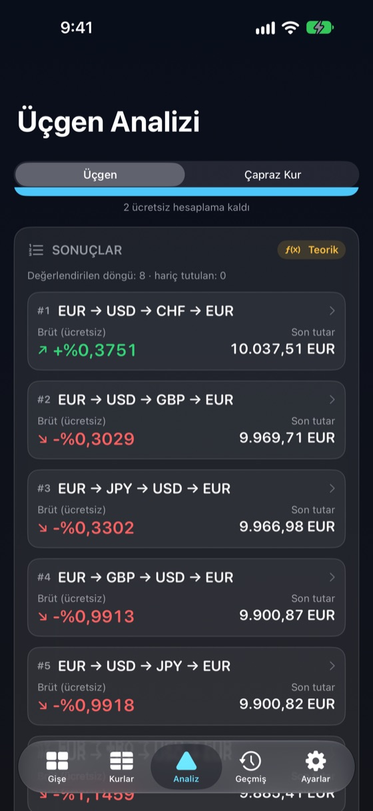
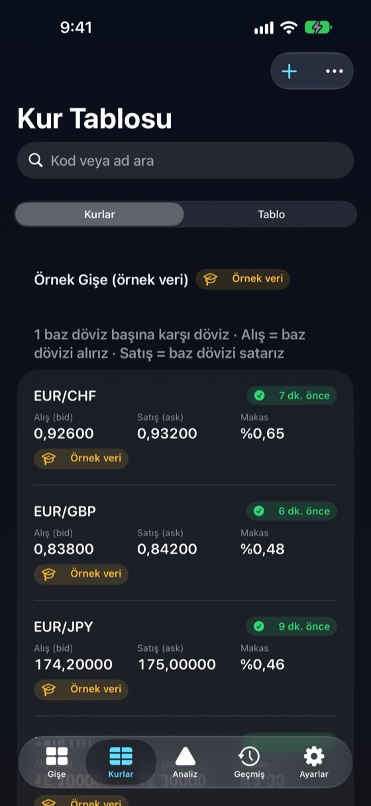
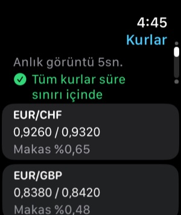

Çevrimdışı Dayanıklılık
Kur tabloları, geçmiş ve hesaplamalar cihazda. FXDesk uçak modunda açılır ve hesaplar.
Döviz büroları, kasiyerler ve döviz işlemcileri için
FXDesk panonuzdaki alış ve satış fiyatlarını kur tablosuna, çapraz kurlara ve sıralı A → B → C → A çevrim yollarına dönüştürür — her makas, ücret ve zaman damgası görünür.
Tamamen iPhone’unuzda, internetsiz çalışır ve teorik bir sonucu asla garanti kâr gibi göstermez.

Her rakam nereden geldiğini, ne kadar eski olduğunu ve kurun hangi tarafının kullanıldığını gösterir.
Kur tabloları, geçmiş ve hesaplamalar cihazda. FXDesk uçak modunda açılır ve hesaplar.
Tablonuzdaki her A → B → C → A döngüsünü iki yönde değerlendirir ve tahmini net sonuca göre sıralar.
Aktif gişenizin, kurların yaşının ve son sonucunuzun Apple Watch’ta salt okunur anlık görüntüsü.
Büyük rakamlı gişe modu, eşit genişlikte rakamlar ve arama öncelikli döviz seçici.
Her çift için alış ve satış girin. Tablo her yöndeki karşılığı gösterir; kur olmayan yerde “—”.
Baz dövizi satmak alış kurunu, almak 1 ÷ satış kurunu kullanır. Ters kurlar tarafları doğru değiştirir. Orta kurlar sahte kâr için çarpılmaz.
Doğrudan kuru üçüncü döviz üzerinden sentetik çapraz kurla, iki makas ve kesişme tespitiyle karşılaştırın.
Adım başı komisyon ve sabit ücret ekleyin. Brüt ve tahmini net yan yana, adım adım.
Her gişe veya şube için ayrı kur tablosu. Çoğaltın, adlandırın, dışa ve içe aktarın — kurlar asla karışmaz.
Her hesaplama kullandığı kurlar, zamanlar, yuvarlama ve ücretlerle saklanır.
Hesap yok, analiz yok, izleme yok. Kurlarınız dışa aktarmadıkça cihazınızda kalır.
Üç hesaplama ücretsiz, sonra tek bir uygulama içi satın alma. Abonelik yok.
Panonuzdaki alış ve satış fiyatlarını yazın ya da örnek gişeyle başlayın.
Başlangıç dövizi ve tutarı ya da belirli bir üç dövizli döngüyü seçin.
FXDesk her adıma doğru kur tarafını uygular ve tablonuzun desteklediği döngüleri sıralar.
Makasları, ücretleri, nakit yuvarlamayı, kurların güncelliğini ve varsayımları kontrol edin.
Gösterge veya referans kur, işlem yapılabilir bir fiyat değildir. FXDesk girdiğiniz kurlarla hesaplar; bir gişenin bu kurlara uyup uymayacağını, banknot stoku olup olmadığını veya limit uygulayıp uygulamadığını bilemez.
Makaslar, komisyonlar, banknota yuvarlama ve adımlar arasındaki süre genellikle küçük teorik farkları yok eder. Bu yüzden FXDesk brüt ve tahmini neti ayrı gösterir; eski, yalnız orta kur veya örnek verileri teorik olarak işaretler.
FXDesk bir hesaplama aracıdır. Alım satım veya döviz işlemi yapmaz, yatırım danışmanlığı vermez ve kâr garanti etmez.
Tüm kurlar, profiller, geçmiş ve hesaplamalar iPhone’da saklanır ve bağlantısız çalışır. Her kur kayıt zamanını ve kaynağını korur; süre sınırınızı aşan kurlar işaretlenir — sessizce güncel sayılmaz.


Saat uygulaması aktif gişenin salt okunur anlık görüntüsünü gösterir: makaslı kurlar, görüntünün yaşı, eski kur sayısı ve son hesaplamanız. iPhone uzaktayken son görüntüyü saklar.
Ücretsiz
$29.99
Tek seferlik uygulama içi satın alma (ABD fiyatı; yerel fiyatları App Store belirler).
Başarılı bir üçgen veya çapraz kur sonucu. Geçersiz giriş, hatalar, kurlara göz atma veya düzenleme ve geçmişi yeniden açma asla sayılmaz; aynı hesaplama iki kez sayılmaz.
Evet. Kurlar, profiller, geçmiş ve tüm hesaplamalar iPhone’unuzda. Yalnızca isteğe bağlı ECB referans kurları ve App Store satın alması bağlantı gerektirir.
Hayır. FXDesk girdiğiniz kurlarla hesaplar. İsteğe bağlı ECB referans kurları her iş günü bir kez yayımlanan, bilgi amaçlı orta kurlardır ve hesaplamada kullanılmaz.
Üç kur üzerinden A → B → C → A çevrimi. Makaslardan sonra son tutar başlangıçtan büyükse döngü teorik bir fark gösterir.
Hayır. Sonuç, kurlar kadar iyidir. Stok, banknot, limitler, ücretler ve zamanlama bunu ortadan kaldırabilir. FXDesk sonuçları gösterge veya teorik olarak etiketler, asla işlem yapılabilir değil.
Satarken düşük alış kurunu alırsınız, alırken yüksek satış kurunu ödersiniz. Her adım makas öder; bu yüzden çoğu döngü başlangıcın biraz altında biter.
Üç tamamlanmış hesaplama. Hatalar ve geçersiz girişler sayılmaz.
Hayır. Geri yükleyebileceğiniz, tek seferlik, tüketilmeyen bir uygulama içi satın almadır.
Salt okunur anlık görüntü: kurlar ve makaslar, görüntünün yaşı, eski kur sayısı ve son hesaplama.
Hayır. Alım satım yapmaz, para değiştirmez, banka veya aracı kuruma bağlanmaz.
Gişe profilleriniz ve kurlarınız, hesaplama geçmişi, ayarlar ve ücretsiz hesaplama sayacı. Hiçbir şey yüklenmez; hesap yoktur.